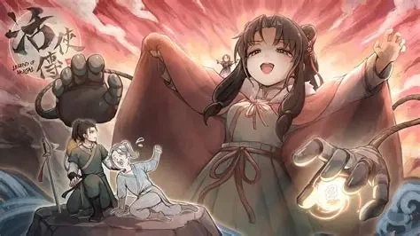
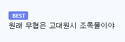

https://bbs.ruliweb.com/best/board/300143/read/76352095

일본에서는 사무라이나 닌자 관련된게 너무 흥해서
중국 무협 장르가 거의 없다 싶이 한 모양
문파를 폭력단체
장문인이나 대사형을
야쿠자 오야붕이랑 행동대장에 비유해서 이해

https://bbs.ruliweb.com/best/board/300143/read/76352095

일본에서는 사무라이나 닌자 관련된게 너무 흥해서
중국 무협 장르가 거의 없다 싶이 한 모양
문파를 폭력단체
장문인이나 대사형을
야쿠자 오야붕이랑 행동대장에 비유해서 이해

댓글
수집 당시 댓글 18개
한대만때려도되냐 · 3 일 전
용과 함께는 잘만 하면서
나는화내지않습니다 · 3 일 전
어딜 무과도 붙지못한 시정잡배놈들이!!
물젖참젖빅젖원추젖사발젖 · 3 일 전
무협에서 문파는 보통 불교 아니면 도교가 많은데 실상 무협 특유의 세계관의 공통분모를 구성하는 것은 유교임. 사부, 사숙, 사형, 사제, 사매 등의 호칭이 바로 가족관계와 같고 실상 사부는 부모와 같음. 그리고 서로 부를 때 오빠, 동생 하는게 바로 현대 한국에서도 그대로 통용됨. 내가 알기론 베트남도 이렇게 부른다고 알고 있음. 그래서 유사 가족적인 관계가 형성되는데 이거는 한국인에게는 이질감없이 바로 받아들여짐. 복잡한 사승관계도 쉽게 이해함. 사숙? 작은 아버지(숙부)지 뭐. 중국은 넓은 땅에 이질적인 민족이 섞여 있어서 자기 사람이 중요하고 의리가 중요함. 호탕하게 의형제맺고 하는거임. 한국은 반면 진짜 유사 가족임. 매우 균질적인 문화를 갖고 있고 가족관계의 확장이 사회관계임. 그리고 유교 문화 본진이라서 공유하기 쉬움. 반면 일본은 같은 반 친구도 안 친하면 그냥 성에 상을 붙여 부르거나 좀 친하면 이름+짱이라고 부르지만 그 거리감각이 한국과는 다름. 일본은 가족이라도 '기업', '조직'같은 느낌이 있음. 아버지가 사장이고 그밑에 가족들이 위계가 있어 각자 자기 할일을 하는 느낌. 일본의 사무라이물도 자기 주인에 대한 충성, 배반관계가 기본 배경이라 정서가 다른거임. 그러니 자기 문화에 맞게 저렇게 이해하는거지.
빵빵빵빵빵빵 · 3 일 전
와 비유가 쓰벌 피꺼솟하네
Elkori · 3 일 전
솔직히 정부가있는데 지역깡패새끼들이 난리치는거 맞지요
MoonHole · 3 일 전
상아형 스토리좀 ㅠㅜ
배수지 · 3 일 전
정확히 이해하고 있잖아
댓글은똥이야 · 3 일 전
하드코어미식가 · 3 일 전
시발 한달 연기 시발시발 !!!
도윤회 · 3 일 전
용과같이의 나라
버팔로1122 · 3 일 전
일본에서 잘팔리는 소년만화가 무협지 재질이잖아... 모험을 한다 = 무림에 나선다 성장을 한다 = 고수가 되어간다 천마/사파의고수를 상대로 최종 승리한다 = 마왕을 무찌른다 대충 이런 공식을 따라가지 않나...? 그러니 무협지가 없어도 충분한거겠지 닌자나 사무라이얘기도 대충 비슷한 결이고
헤엄치는라이언 · 3 일 전
그건 무협지 재질이 아니라 고대 그리스부터 시작된 영웅서사 장르의 틀이라고 봐야지....
부르기어려운닉네임 · 3 일 전
너가 원하는건 Hero's Journey라고 부르는종류임 검색해봐라
통합물류 · 3 일 전
사시미가 쫌 많이 길지
산업핵폐기물 · 3 일 전
조활이 전국구 칼잡이가 되는 이야기다
ㅆㄷㅇㅎ · 3 일 전
맞긴하네?
고양이한박스 · 3 일 전
조폭물 맞지 정파건 사파건 보호비 비슷한걸로 삥뜯고 지들끼리 비무(항쟁), 정사대전 한답시고 민간인도 휘말리는 칼부림질 하면서 관부는 안(못)건드림
카린토 · 3 일 전
무협 조폭물 맞아 그래서 야쿠자가 임협임